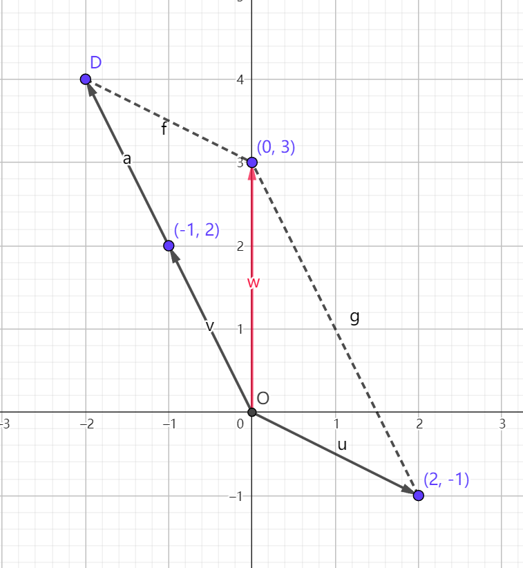
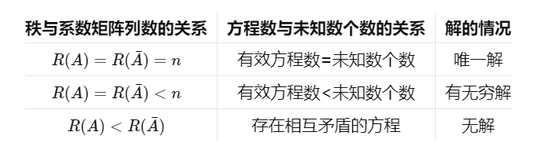

用矩阵求解线性方程组
求出一个线性方程组的解是解决实际问题的关键，在用矩阵表示了线性方程组的一些操作后，希望矩阵能够用于求解线性方程组，而求解线性方程组的常用方法之一就是消元法，所以接下来探讨如何用矩阵表达线性方程组的消元过程
1 用矩阵表示线性方程组的消元法
比如有这样一个方程组：
消元法本质消去的是系数，元消失了是因为系数为 0 了，消元过程中，等式右边的系数也会进行线性运算，所以需要在拎出系数矩阵的同时给他加上一列等式右边的数，形成增广矩阵：
下面对方程组进行消元操作，并在每次消元后将其矩阵写出来：
此时可以根据方程组直接解出 x 的值。
通过这个例子可以看到，方程组中的消元操作可以在矩阵中表示为某一行乘以某个数加到另一行去，这是矩阵初等行变换的一种。
矩阵的初等行变换包括三种, 分别对应方程组中如下变换：
- 交换两行——交换方程组中两个方程的位置
- 给某行所有元素乘以一个常数——给某个方程两端同乘以一个常数
- 某行乘以一个常数加到另一行上——某个方程乘以某个常数加到另一个方程上
2 方程组的几何含义
线性方程组无非就是齐次方程组和非齐次方程组，但在探讨解方程组的范式之前，需要先了解一下方程组的几何含义。
以二维方程组为例：
2.1 按行看
从行来看，每个方程都可以看成一条直线，而方程组的解就是它们的交点
2.2 按列看
写成向量形式：
解方程的问题转化为了求解两个向量如何线性组合能够得到另一个向量的问题。
当 x=1, y=2 时满足要求

3 解线性方程组
3.1 解齐次线性方程组
接下来就要讨论矩阵求解线性方程组的范式，齐次线性方程组相比非齐次线性方程组更为简单，所以就从它开始吧
齐次线性方程组一般形式是： $AX=0$
为了形象些还是举例子，令 A= $\begin{bmatrix}1&2&2&2\\2&4&6&8\\3&6&8&10\end{bmatrix}$,X= $\begin{bmatrix}x_{1}\\x_{2}\\x_{3}\\x_{4}\end{bmatrix}$,b= $\begin{bmatrix}0\\0\\0\end{bmatrix}$
展开成：
那么解方程组问题就变成了求解这四个向量如何线性组合能够得到 $\left[\begin{matrix}0\\0\\0\end{matrix}\right]$
按照解方程的习惯先进行消元，这种方法可以让矩阵每行的首个非零元素呈阶梯状排列，因此这种形式也叫做行阶梯形。
行阶梯形：紧贴着非零元素画线，画出的线可以跨列，不能跨行。 例子：
反例：
消元化简后得到：
对应：
先看第三行，要使得方程成立，需要满足：$0x_1+0x_2+0x_3+0x_4=0$ ，所以无论 x 给什么值方程都是成立的
同理看第二行：$0x_1+0x_2+2x_3+4x_4=0\rightarrow x_3=-2x_4$
第一行：$1x_1+2x_2+2x_3+2x_4=0$
显然解不出方程
思考一下，发现有些向量可以被其他向量线性表示，也就是可以被其他向量替代
需要找出可以被线性表示的向量，因为它是求解这个方程的突破口——可以给与它相乘的 x 赋值，从而解出其他的 x
能否被线性表示是相对的， $\left[\begin{matrix}1\\0\\0\end{matrix}\right],\left[\begin{matrix}2\\0\\0\end{matrix}\right],\left[\begin{matrix}2\\2\\0\end{matrix}\right],\left[\begin{matrix}2\\4\\0\end{matrix}\right]$ 之间进行相互表示的方案不止一种：
如果将 $\left[\begin{matrix}2\\0\\0\end{matrix}\right],\left[\begin{matrix}2\\4\\0\end{matrix}\right]$ 作为可被线性表示向量，它们可以这样被其他两个向量表示：
也可以把 $\left[\begin{matrix}1\\0\\0\end{matrix}\right], \left[\begin{matrix}2\\2\\0\end{matrix}\right]$ 作为可被线性表示的向量，那么它们可以被 $\left[\begin{matrix}2\\0\\0\end{matrix}\right],\left[\begin{matrix}2\\4\\0\end{matrix}\right]$ 这样表示：
但是在化为行阶梯式后，一般选择每行首个非零元素（主元）所在的列（主元列）去表示其他的向量（自由列），因为这样一定能够成功，下面证明这一点：化为阶梯式后选取的主元列一定呈现这种形式：$\left[\begin{matrix}a_1\\0\\0\end{matrix}\right],\left[\begin{matrix}a_2\\b_2\\0\end{matrix}\right],\left[\begin{matrix}a_3\\b_3\\c_3\end{matrix}\right]$ ，假如要表示的自由列为 $\left[\begin{matrix}a\\b\\c\end{matrix}\right]$，列出方程：$i\left[\begin{matrix}a_1\\0\\0\end{matrix}\right]+j\left[\begin{matrix}a_2\\b_2\\0\end{matrix}\right]+k\left[\begin{matrix}a_3\\b_3\\c_3\end{matrix}\right]=\left[\begin{matrix}a\\b\\c\end{matrix}\right]$ ，而 $\begin{cases}ia_{1}+ja_{2}+ka_{3}=a\\jb_{2}+kb_{3}=b\\kc_{3}=c\end{cases}$ 必定有解。
主元：行阶梯式每行的首非零元
自由变量：与自由列相乘的变量
选择 $\left[\begin{matrix}1\\0\\0\end{matrix}\right],\left[\begin{matrix}2\\2\\0\end{matrix}\right]$ 为主元列后，给自由变量赋值——这里令 $x_2=1，x_4=0$。根据上面 $x_3=-2x_4$ 和 $1x_1+2x_2+2x_3+2x_4=0$，解出 $x_3=0,x_1=-2$，所以 $X_1$ = $\begin{bmatrix}-2\\1\\0\\0\end{bmatrix}$；令 $x_2=0，x_4=1$，得 $X_2$ = $\begin{bmatrix}2\\0\\ -2\\1\end{bmatrix}$。
这只是其中两个解，称为特解，那么如何得到这个方程所有的解呢？这个例子中有两个自由变量，给这两个自由变量赋值后相当于在解空间内确定了一条直线（两个向量的和），由于原点必定是解，所以这个方程的解空间应该是一个平面（由一条直线与一个点确定）。下面需要想办法将这个平面描述出来：
对于线性齐次方程组，对解进行线性运算后仍然是线性方程组的解：
所以可以对两个解进行线性运算，用向量的线性组合来表示解空间：$c_1\begin{bmatrix}-2\\1\\0\\0\end{bmatrix}+c_2\begin{bmatrix}2\\0\\ -2\\1\end{bmatrix}$
这就是这个齐次线性方程组的通解，构成的向量空间也叫零空间
3.2 解非齐次线性方程组
有了解齐次线性方程组的基础，就可以研究如何解非齐次线性方程组了。
刚刚已经解过下面这个齐次方程了：
将 $\begin{bmatrix}0\\0\\0\end{bmatrix}$ 改为 $\begin{bmatrix}1\\5\\6\end{bmatrix}$ 就成为了非齐次线性方程:
齐次线性方程组由于等式右边都为 0，所以消元的时候可以不需要考虑，而非齐次线性方程组在消元过程中应该将等式右边向量带上，因此消元时使用增广矩阵：
将矩阵变换回方程可以得到：
与齐次方程组一样，选定第一第三列的向量对应的变量为主元，给自由变量赋值。令 $x_{2}=x_{4}=0$，得到 $x_{3}=\frac{3}{2},x_{1}=-2$。即 $X=\left.\left[\begin{matrix}-2\\0\\\frac{3}{2}\\0\end{matrix}\right.\right]$
称这个解为特解
观察一下会发现，非齐次方程组相比齐次方程组其实就是给零空间加上了一个平移向量，非齐次线性方程组的解的维数与非齐次线性方程组应该是一致的，我们在解系数矩阵对应的齐次线性方程组时得出了其零空间为平面的结论，所以非齐次方程组的解应该也是一个平面
由于非齐次线性方程组加上相应的齐次线性方程组后仍然成立：
所以可以通过齐次线性方程组的零空间+非齐次线性方程组的特解的形式得到非齐次线性方程组的通解：
4 讨论方程组解的情况
经过上面解方程的过程，我们会有一个方程什么时候有解，什么时候没解的疑问，方程组形式下有一些经验来判断方程组解的情况，那么将方程组抽象为矩阵后有没有判定方程组解的情况的标准呢？
4.1 齐次线性方程组
假设有这么一个方程：
计算后可以得到解只有一个：$x_1=x_2=x_3=0$ ，所以这个方程只有零解。将其系数矩阵写出：
可以看到行阶梯形首非零元有 3 个
假设有这么一个方程：
计算后发现它的解有无数多个
其系数矩阵可以写成：
可以看到行阶梯形有 2 个首非零元
行阶梯形首非零元的个数对应的是主元的个数，也等于有效方程的个数，可见这个数量很重要，把它叫做矩阵的秩，记作 R(A) 。
n 为系数矩阵的列数，对于齐次方程来说有如下关系：
| 秩与系数矩阵列数的关系 | 方程数与未知数个数的关系 | 解的情况 |
|---|---|---|
| R (A)=n | 有效方程数=未知数个数 | 只有零解 |
| R (A)<n | 有效方程数<未知数个数 | 有无穷解 |
4.2 非齐次线性方程组
给出三种方程：
分别对应增广矩阵 :
对于非齐次方程来说有如下关系：
